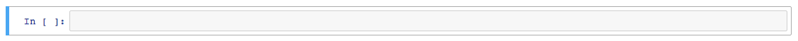
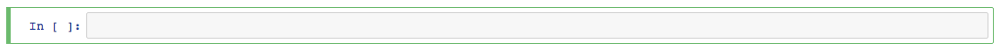

Cheat Sheet - Jupyter Notebook Keyboard Shortcuts
Command Mode (Blue)

Shortcut
What Happens
h
Shows a pop-up window listing out all keyboard shortcuts
cmd + shift + p (Mac)ctrl + shift + p (Win)
Shows the Command Palette
enter
Goes into Edit Mode (green) for the currently selected cell
ctrl + enter
Runs the selected cell
shift + enter
Runs the selected cell; Selects the cell below
option + shift + enter (Mac)
alt + enter (Win)
Runs the selected cell; Adds a new cell below; Enters the new cell in Edit Mode
A
Inserts a new cell above the currently-selected cell
B
Inserts a new cell below the currently-selected cell
C
Copies the currently-selected cell(s)
V
Pastes a cell(s) that have been
C Copied as new cell(s) below the currently-selected cell
shiftV
Pastes a cell(s) that have been
C Copied as new cell(s) above the currently-selected cell
D D (the 'D' key twice)
Deletes the currently selected cell(s)
Shift + Click Cell
Highlights the range of cells between the one that was selected, and the one that you clicked...just like
Shift-Clicking a series of files
Shift + M
Merges any highlighted cells that had been
If only one cel is selected, it merges the selected cell with the cell directly below
Shift-Clicked;If only one cel is selected, it merges the selected cell with the cell directly below
M
Changes the cell's type to
Markdown; If the cell is run, it will be executed as Markdown and the output will be formatted and shown; Helpful for providing documentation in the notebook
Y
Changes the cell's type to
Code; If the cell is run, it will be executed as code and the output displayed below the cell
Edit Mode (Green)

Shortcut
What Happens
esc
Goes back to Command Mode (Blue)
cmd + shift + p (Mac)ctrl + shift + p (Win)
Shows the Command Palette
ctrl + enter
Runs the selected cell
shift + enter
Runs the selected cell; Selects the cell below
option + shift + enter (Mac)
alt + enter (Win)
Runs the selected cell; Adds a new cell below; Enters the new cell in Edit Mode
cmd + click (Mac)ctrl + click (Win)
Creates multiple cursors for multi-cursor editing
cmd + / (Mac)ctrl + / (Win)
Toggles whether or not the line(s) of code are commented out or not
tab
Engages code completion if you're typing code; Indents the line of code if you're at the beginning of a line
shift + tab
Displays a tooltip if you're typing code; helpful for referencing function parameters
ctrl + shift + -
Splits the cell into two cells where your cursor is located